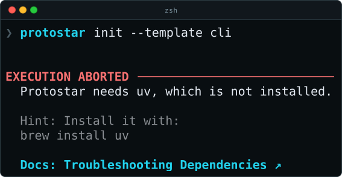
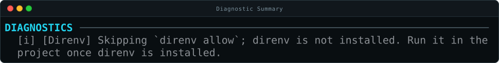

Design Principles¶
Protostar edits files people have already written, so its engine follows a few rules that keep that safe. Each section below states one rule, shows it in the code or the output, and says what it prevents. The Mechanics pages, starting with The Environment Manifest, cover how each one is built.
Templates Say What, Not How¶
A template lists what a project should have: its tools, its dependencies, and the settings that differ from each tool's defaults. It never lists the steps to build it. Protostar works those out.
The same request can come from flags instead:
Because a template describes the result rather than the steps, Protostar can work out the whole plan before it does anything. That is what lets --dry-run show the exact plan a real run carries out, rather than a guess at it.
Plan First, Then Act¶
Every run has two phases, and only the second one changes anything.
flowchart TD
A[Flags or the recipe editor] --> B["Phase 1 · plan()"]
B --> C[EnvironmentManifest]
C -->|uv and git found| D["Phase 2 · execute()"]
C -.->|Preview| E[--dry-run / --json]
D --> F[Writes and commands, journaled]plan()only reads. Each tool's module declares what it needs into oneEnvironmentManifest: files to write,pyproject.tomlsettings, packages to install, and commands to run. Nothing is written and no command runs. Planning also checks thatuvandgitare installed, and stops before touching the project if either is missing.execute(manifest)is the only phase that changes the project. TheSystemExecutorapplies the manifest in a fixed order, and records each path in a journal before it first changes it.
If a write fails, a package doesn't install, or you press Ctrl+C, the executor stops the running command and restores every journaled path to its original bytes. A tool that ran its steps one after another would leave the earlier steps in place when a later one failed.
What rollback covers
Rollback restores every path Protostar recorded before changing it: the files it writes, pyproject.toml and uv.lock before uv runs, and what its own commands declare, such as the .git/ directory from git init. The virtual environment and global caches fall outside it. Automatic Rollback says exactly what is and isn't restored, and Rollback Internals shows how.
The plan you see is the plan that runs
--dry-run shows the change review built from the same manifest a real run executes, and --dry-run --json returns that manifest with the review. Before writing, execution checks that every file the review read is unchanged, and stops if one changed, so a run never applies changes you didn't see.
The Engine Never Touches the Terminal¶
The engine's two entry points, Orchestrator.plan() and Orchestrator.execute(), take data and return data: an InitRequest becomes an EnvironmentManifest, then an ExecutionResult. The engine never prints, prompts, or draws a spinner. The recipe editor, the change review, the progress trail, and --json output all live in the protostar.cli package.
Two rules keep that boundary:
- Missing input is an error, not a prompt. When the engine needs something only a person can supply, such as a template variable's value, it raises an error that lists what's missing (
MissingTemplateVariablesError.variables). The CLI decides whether to ask. - Progress crosses as a callback.
execute()takes an optionalprogresshook (ProgressStepinprotostar.progress) and names each slow step in plain words. The CLI draws each step as a spinner that leaves a✔or✖line, and--jsonand library callers pass nothing. Only a failure that triggers rollback raises through a step. The hook itself must never raise, because the engine would read that as the step failing and roll its work back.
flowchart LR
subgraph CLI ["CLI (protostar.cli)"]
direction LR
TUI["Recipe editor & change review"]
Trail["Progress trail"]
JSON["--json output"]
end
subgraph Engine ["Engine (orchestrator.py)"]
direction LR
Plan["<span style='white-space:nowrap'>plan(InitRequest) → Manifest</span>"]
Exec["<span style='white-space:nowrap'>execute(Manifest) → ExecutionResult</span>"]
end
CLI --> Engine
Exec -.->|"progress(label)"| TrailSo --json never has to switch prompts off: the engine never had any. The same engine runs behind the editor, scripts, CI, and coding agents, and its tests need no terminal.
Each Tool Is a Module That Knows Only Itself¶
Each tool Protostar supports is one module. A module declares everything its tool needs and knows nothing about the other modules. When mypy is on, its module declares the dependency, the commit hook, the CI step, the just recipe, and the [tool.mypy] settings. The hook configuration, the CI workflow, and the justfile are each assembled from what the enabled modules declared, so the engine has no special case for mypy.
The mypy module, in full
class MypyModule(ToolModule):
"""Configures the Mypy static type checker with a sensible baseline.
Strict mode is intentionally left to templates that want it.
"""
cli_flags = ("--mypy",)
info = ToolInfo(
summary="Check type hints to catch mistakes before the code runs",
adds=("Mypy as a development dependency and its settings in pyproject.toml."),
workflow=(
"`mypy` reports calls that don't match their type hints, such as "
"passing text where a number is expected. Code without hints is "
"mostly left alone."
),
docs_url="https://mypy.readthedocs.io/en/stable/",
)
config_key = "mypy"
signals = (
PathSignal("mypy.ini"),
PathSignal(".mypy.ini"),
TableSignal(("tool", "mypy")),
SectionSignal("setup.cfg", "mypy"),
RequirementSignal("mypy"),
)
@property
def name(self) -> str:
"""Returns the human-readable module name."""
return "Mypy"
def build(self, manifest: EnvironmentManifest) -> None:
"""Queues Mypy dev dependency, ignores, hooks, and pyproject.toml config."""
logger.debug("Building Mypy tooling layer.")
manifest.dependencies.add_dev("mypy")
manifest.filesystem.add_environment_artifact(".mypy_cache/")
manifest.tooling.add_ide_extension(
("ms-python.mypy-type-checker", "matangover.mypy")
)
# Checking only the staged files misses errors they cause elsewhere, so
# the hook, CI, and `just typecheck` all check the whole project.
hook_payload = """ - id: mypy
name: mypy
entry: uv run mypy .
language: system
types: [python]
pass_filenames: false"""
manifest.tooling.add_pre_commit_local_hook(hook_payload)
manifest.tooling.add_ci_step(
" - name: Run Mypy\n run: uv run mypy ."
)
manifest.tooling.just_typecheck_commands.append("uv run mypy .")
manifest.tooling.just_clean_paths.append(".mypy_cache")
config = """[tool.mypy]
mypy_path = "src"
python_version = "<% PYTHON_VERSION %>"
pretty = true
show_error_codes = true
show_error_context = true
warn_return_any = true
warn_unused_configs = true
check_untyped_defs = true
explicit_package_bases = true
"""
self.add_pyproject_config(
manifest, render_template(config, escaped(manifest.rendering_context()))
)
Adding a tool means writing one module and listing it in a few registries, without checking how it interacts with every other tool; see Extending Protostar. It is also why every tool has a --<tool> and a --no-<tool> flag without the template author writing anything; see Turning Tools On and Off.
Defaults Stay Gentle, and Templates Add Strictness¶
Each module ships settings a casual project would want. A template adds the stricter settings its kind of project needs.
If the mypy module set strict = true, someone writing a few scripts would get a wall of type errors on their first mypy .. So the module stays gentle, and the cli template, which builds a package other people install, adds strict = true itself:
# The mypy module's settings, in part:
[tool.mypy]
check_untyped_defs = true
warn_return_any = true
warn_unused_configs = true
# What the cli template adds:
[tool.mypy]
strict = true
With strictness in the module, every project would carry it, and a template that wanted less would have to undo it one setting at a time. With strictness in the template, the choice stays with the kind of project that needs it, and each template stays short. Built-in Templates describes how this rule is enforced.
A Missing Program Stops the Run Before It Starts¶
Planning checks for the programs Protostar itself runs: uv and git. If either is missing, Protostar raises MissingDependencyError, names each missing program with one command that installs them all, and exits with code 69 (EX_UNAVAILABLE). Nothing has been written.

The install command is the one for the package manager Protostar finds.
A program that only a selected tool runs, such as direnv or just, never stops a run. Planning records it in missing_tools, the files that tool needs are written as usual, and execution skips only the steps that run it. The run ends with the command that installs it.
Files Are Merged by Structure, Not Replaced¶
When Protostar updates an existing pyproject.toml, it edits the file in place. It parses the file with tomlkit, which keeps every comment and the layout, changes only the keys it manages, and writes the result back. protostar.lock records what it applied to each key, so a later update can tell your edits from its own; see How Protostar Tracks Your Files.
Here is a real change. An ML project with its own dependencies and Ruff settings turns on mypy and runs init --force-merge again. uv adds the new dependencies, mypy's table arrives under its header, and the project's own lines, including the comment on extend-select, are unchanged:
--- a/pyproject.toml
+++ b/pyproject.toml
@@ -3,10 +3,16 @@
version = "0.1.0"
requires-python = ">=3.13"
dependencies = [
+ "astropy>=8.0.1",
+ "astroquery>=0.4.11",
"matplotlib>=3.11.2",
+ "nbdime>=4.0.4",
"numpy>=2.5.3",
"pandas>=3.0.5",
+ "photutils>=3.0.0",
"scikit-learn>=1.9.1",
+ "scipy>=1.18.1",
+ "specutils>=2.4.0",
"torch>=2.14.0",
"tqdm>=4.70.1",
]
@@ -18,6 +24,7 @@
dev = [
"ipywidgets>=8.1.9",
"jupyterlab>=4.6.3",
+ "mypy>=2.3.1",
"nbdime>=4.0.4",
"ruff>=0.16.8",
]
@@ -48,6 +55,19 @@
]
extend-select = ["NPY", "PD"] # NumPy and Pandas specific linting rules
+# ---- Mypy ---- #
+
+[tool.mypy]
+mypy_path = "src"
+python_version = "3.13"
+pretty = true
+show_error_codes = true
+show_error_context = true
+warn_return_any = true
+warn_unused_configs = true
+check_untyped_defs = true
+explicit_package_bases = true
+
# ---- Protostar ---- #
[tool.protostar]
@@ -62,6 +82,7 @@
[tool.protostar.tools]
docker = true
+mypy = true
[tool.protostar.fallback]
agents = false
Every managed file works the same way. Workflows merge by job and step, the hook configuration by hook, and .gitignore only gains the patterns it's missing. Files with no structure of their own, such as the justfile, merge line by line against the last version Protostar wrote, the way Git merges branches.
A tool that fills in templates as text can only write a new project, and can only update one by generating it again. Merging by structure lets Protostar set up a project you already have, and keep updating it, without overwriting your work. To replace existing files with Protostar's version instead, pass --force-replace; see Changes to Files You Already Have.
Every Failure Says What to Do Next¶
Protostar reports problems at three levels:
- A failed command shows its own output. Protostar captures what every command it runs prints, such as
uv addorgit init, and shows it when the command fails. You see uv's own explanation, not "installation failed". -
Problems that don't stop the run are listed at the end. A missing optional program or a skipped step is collected into
ExecutionResult.diagnosticsand shown in a summary when the run finishes:
1. A bug in Protostar comes with a bug report. An unexpected exception prints its traceback and a link that opens a GitHub issue, filled in with your operating system, Python version, the command, and the traceback. Nothing is sent until you submit it.
Expected failures and bugs stay apart. A ProtostarError, such as a missing program, a dropped connection, or a configuration file that won't parse, prints a message and a hint, with no traceback unless you pass --verbose. Anything else is a bug: it shows the traceback and the issue link, and exits with code 70 (EX_SOFTWARE).
Exit Codes Say What Kind of Failure It Was¶
Protostar exits with a different code for each kind of failure, not only 1. The codes follow BSD's sysexits.h, which many command-line tools use: 65 for a template it can't read, 69 for a missing uv or git, and 75 for a network failure worth retrying. Python doesn't define their names on Windows, but the numbers are the same there. The exit code matrix lists every one.
A script that only checks for a non-zero exit knows that something failed. A script that checks the code knows what to do next: retry a network failure, install a missing program, or stop on a broken configuration. With --json, the error envelope also names the exception class, and most carry a docs_url that links to the fix.
Related Pages¶
- Why Protostar?: How these rules play out against Copier on a real update.
- The Environment Manifest: The object every module declares into and the executor reads.
- The Orchestrator: How
plan()andexecute()are built. - Error Handling Architecture: Every exception, its exit code, and how a crash report is built.
- Agent & Machine Interface: Driving Protostar from scripts and agents with
--jsonand--dry-run.